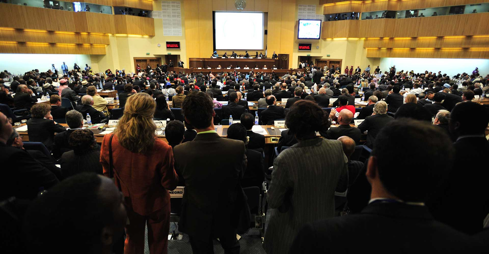

Building economic resilience.
Currency stability, a stronger financial framework, and growth beyond the IMF programme.

THE CONVERSATION THAT MOVES A NATION
Mobilizing capital, technology, and policy for Ghana’s next industrial wave. A shared vision. A stronger economy. A future we build together.
Ghana’s economic future needs a shared conversation. Since 2012, the Ghana Economic Forum has brought business leaders, policymakers, and economic thinkers together to examine the issues that matter.
Convened by the Business & Financial Times, the forum connects ideas with practical pathways for national development.
THE ISSUES THAT MATTER
Exploring the forces shaping our economy, and the opportunities ahead.
Currency stability, a stronger financial framework, and growth beyond the IMF programme.
Financing a resilient energy economy and addressing the challenges of legacy debt.
Turning agricultural potential into industrial strength through investment and value addition.
VOICES SHAPING THE CONVERSATION
 POLICY
POLICYPresident of Ghana
 BUSINESS
BUSINESSCountry Managing Partner, KPMG Ghana
 POLICY
POLICYPresidential Advisor, 24-Hour Economy Secretariat
 BUSINESS
BUSINESSCountry Head, Olam Agri Ghana
 FINANCE
FINANCEIMF Resident Representative, Ghana
 ENERGY
ENERGYCEO, Tema Oil Refinery
 BUSINESS
BUSINESSSenior Partner, AB & David Africa
 FINANCE
FINANCEEconomist and Investment Consultant
 FINANCE
FINANCEProfessor of Finance, University of Ghana Business School
 FINANCE
FINANCEFounder and President, Increase Financial LLC
 BUSINESS
BUSINESSChief Executive Officer, Ghana Gold Board (GoldBod)
 BUSINESS
BUSINESSChief Executive Officer, Ghana Investment Promotion Authority
 FINANCE
FINANCEHead, Marketing & Brand, Ecobank Ghana
 FINANCE
FINANCEManaging Director, Ecobank Ghana
 FINANCE
FINANCEManaging Director, Ghana Stock Exchange
 BUSINESS
BUSINESSChief Executive Officer, Business and Financial Times
FINANCEDeputy Managing Director, Operations & Support Functions, Fidelity Bank Ghana
BUSINESSChief Executive Officer, Infrastructure Systems Ltd
POLICYCommissioner General, Ghana Revenue Authority
BUSINESSCo-Chair, African SEZ Chamber
ENERGYChief Executive Officer, Volta River Authority (VRA)
BUSINESSCountry Managing Partner, EY Ghana
Speaker profiles updated from the supplied Ghana Economic Forum artwork.
YOUR PLACE IN THE CONVERSATION
Connect with the people shaping Ghana’s economy. Exchange perspectives, build relationships, and be part of the conversation on what comes next.
Have a registration enquiry?PLAN YOUR EXPERIENCE
Use any Register button to visit the B&FT registration platform. Event tickets are GH¢ 3,000 per person. For assistance, contact the event team.
The forum takes place on 10 - 11 November, 2026 in Accra, Ghana. Attendance is Strictly By Invitation. The final venue will be confirmed here once available.
For corporate participation, sponsorship, or partnership enquiries, speak to our team about the opportunities available.